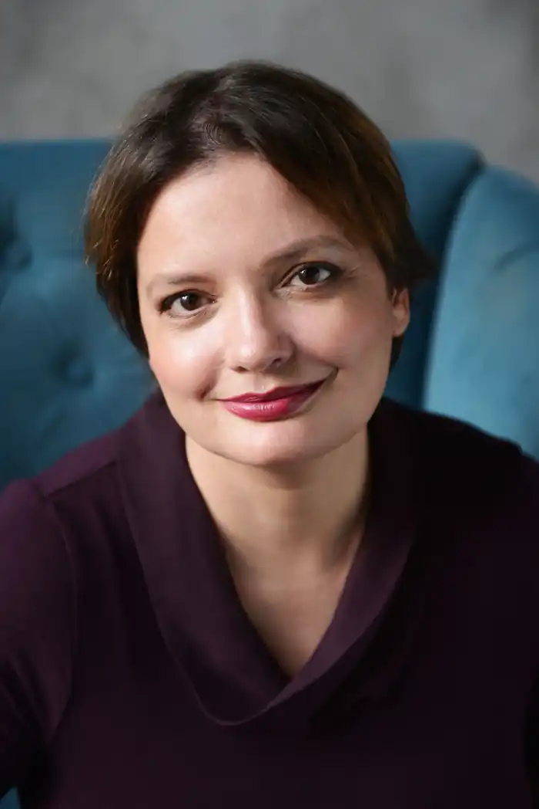

Справжнє ім'я — Тамара Анатоліївна Дуда. Українська письменниця, перекладачка та волонтерка. Лауреатка Національної премії України імені Тараса Шевченка 2022 року. Авторка роману "Доця" (2019), відзначеного як книга року BBC. Тамара Дуда відома своєю волонтерською діяльністю.
Народилася 5 січня 1976 року в Києві. 1992 року закінчила Український гуманітарний ліцей. 1993 року вступила до Інституту журналістики Київського університету, захистила диплом 1998 року. З 2003 до 2005 навчалася в Київському міжнародному університеті. Понад 20 років перекладає економічні тексти з англійської.
З 2014 року Тамара Дуда була волонтеркою у зоні АТО. За волонтерську діяльність була відзначена грамотою мера Києва. Одружена, має трьох дітей. "Доця" — перший роман письменниці. Він був опублікований у видавництві "Білка" українською та англійською мовами. Події в книзі відбуваються 2014 року під час російсько-української війни на сході України. Планується екранізація роману. У 2021 році у видавництві "Білка" вийшов другий роман Тамари Горіха Зерня "Принцип втручання", а жанром — детектив. Головна героїня Станіслава втратила на російсько-українській війні чоловіка, і єдиною розрадою для неї стала робота. На прохання знайомої вирушає у місто свого дитинства на Черкащину, де і розгортаються основні сюжетні події. У 2021 році Тамара Горіха Зерня з романом "Доця" номінована на здобуття Національної премії України імені Тараса Шевченка 2022 року у номінації "Література". Твір був допущений до участі у другому турі конкурсу і переміг.